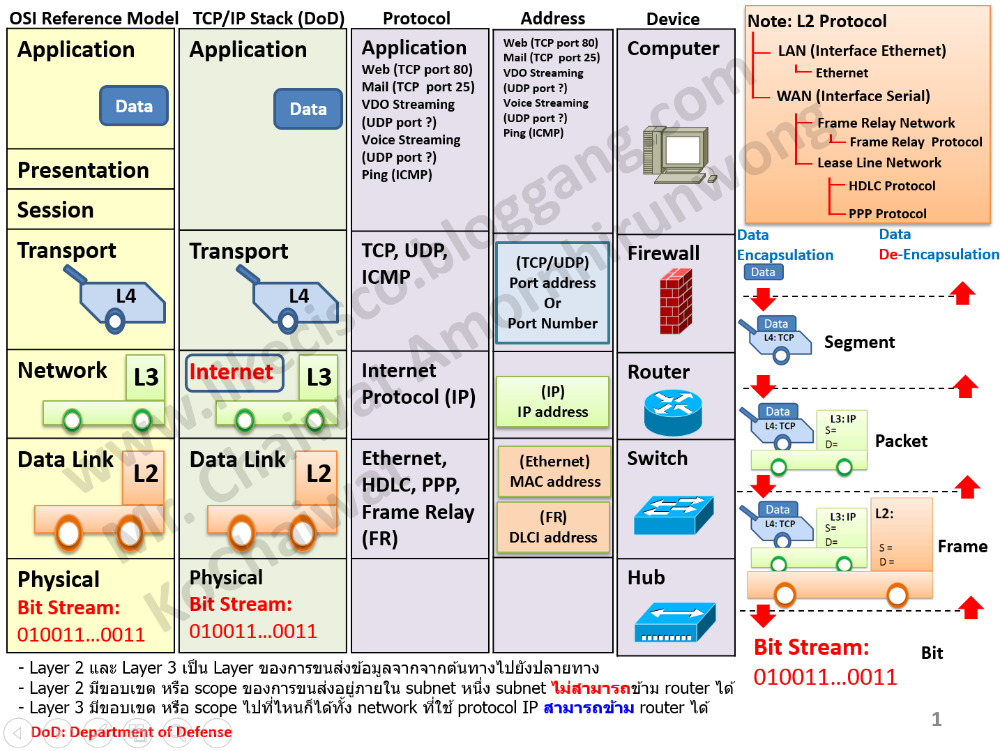
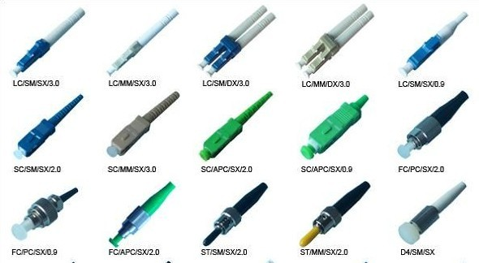

IPv4
IPv4 เป็น Address ขนาด 32-bit
192.168.10.10/24
NETWORK ENGINEER HANDBOOK
รวมความรู้ Network, Cisco, Huawei, Routing, Switching, Troubleshooting และ Lab ไว้ในที่เดียว
เริ่มเรียนรู้ →KNOWLEDGE BASE
OSI, TCP/IP, IPv4, Subnetting, ARP, DNS และ DHCP
VLAN, Trunk, STP และ Inter-VLAN
Static Route, Default Route, OSPF และ Routing Table
Cisco IOS Configuration และ Commands
Huawei VRP, VLAN, Routing และ OSPF
วิเคราะห์ปัญหา Network แบบเป็นขั้นตอน
Single-mode, Multi-mode, หัวต่อ LC/SC/MPO และ SFP
HTTP, SSH, SNMP, NTP, STP, HSRP, OSPF, BGP และ Port ที่ควรรู้
ชนิดสาย Console, การตั้งค่า 9600 8N1 และแก้ปัญหาเข้าไม่ได้
Cat5, 5e, 6, 6a, 7, 8 ความเร็ว ระยะ และการเข้าหัว RJ45
01 / NETWORK BASICS
IPv4 เป็น Address ขนาด 32-bit
192.168.10.10/24
ระบบแจก IP Address ให้กับ Client
Discover → Offer
→ Request → ACK
แปลง Domain Name ให้เป็น IP Address
google.com → IP
โมเดล 7 Layers สำหรับการสื่อสาร Network
L7 → L1
ภาพด้านล่างเป็นภาพวาดจำลองแบบง่าย เพื่อให้จำลักษณะเด่นของอุปกรณ์แต่ละประเภท รุ่นจริงจะมีรูปร่างและจำนวนพอร์ตต่างกัน
OSI แบ่งการสื่อสารเป็น 7 ชั้น เพื่อให้รู้ว่าปัญหาเกิดที่ชั้นไหน เวลาส่งข้อมูลจะถูกห่อทีละชั้น (Encapsulation) และแกะออกตอนรับ การ Troubleshoot มักไล่จาก Layer 1 ขึ้นไป
| Layer | หน้าที่ | ตัวอย่าง |
|---|---|---|
| 7 Application | บริการที่ผู้ใช้เรียกใช้ | HTTP, DNS, DHCP |
| 6 Presentation | แปลงรูปแบบ / เข้ารหัสข้อมูล | TLS, JPEG |
| 5 Session | เปิด-ปิดการเชื่อมต่อ | RPC, NetBIOS |
| 4 Transport | ส่งข้อมูลระหว่างโปรแกรมด้วย Port | TCP, UDP |
| 3 Network | หาเส้นทางข้ามเครือข่ายด้วย IP | Router, IP |
| 2 Data Link | ส่งภายใน LAN ด้วย MAC Address | Switch, VLAN |
| 1 Physical | ส่งสัญญาณไฟฟ้า / แสง | สาย LAN, Fiber |
จุดที่ผู้ใช้และโปรแกรมเรียกใช้เครือข่าย ไม่ใช่ตัวโปรแกรมเอง (เช่น Chrome) แต่คือโปรโตคอลที่โปรแกรมใช้ เช่น HTTP, DNS, DHCP, SMTP ข้อมูลที่ชั้นนี้เรียกว่า Data ปัญหาที่พบ: เข้าเว็บด้วยชื่อไม่ได้ (DNS), เว็บตอบ Error
HTTP, DNS, DHCP, SMTPแปลงรูปแบบข้อมูลให้ทั้งสองฝั่งเข้าใจตรงกัน เช่น เข้ารหัส (TLS/SSL), บีบอัด, แปลงรหัสตัวอักษร (ASCII, Unicode) และรูปแบบไฟล์ภาพ (JPEG, PNG)
TLS, JPEG, Unicodeเปิด รักษา และปิด "เซสชัน" การคุยกันระหว่างสองโปรแกรม เช่น การ Login เข้าระบบหรือการเชื่อมต่อฐานข้อมูล ในโมเดล TCP/IP ชั้น 5-7 ถูกรวมเป็น Application ชั้นเดียว จึงมักไม่แยกพิจารณา
RPC, NetBIOS, SQL Sessionส่งข้อมูลระหว่าง โปรแกรมกับโปรแกรม โดยใช้ Port ระบุปลายทาง TCP จับมือ 3 ทางก่อนส่ง, ใส่เลขลำดับ, รอ ACK และส่งซ้ำถ้าหาย ส่วน UDP ส่งไปเลยไม่รอยืนยัน ข้อมูลชั้นนี้เรียก Segment (TCP) / Datagram (UDP)
SYN → SYN-ACK → ACKระบุที่อยู่ด้วย IP และหาเส้นทางข้ามเครือข่ายด้วย Router ข้อมูลเรียก Packet มีค่า TTL ที่ลดลง 1 ทุกครั้งที่ผ่าน Router เมื่อเหลือ 0 จะถูกทิ้ง เพื่อไม่ให้แพ็กเก็ตวนไม่รู้จบ (traceroute ใช้หลักการนี้)
IP, ICMP, OSPFส่งข้อมูลภายใน LAN ด้วย MAC Address (48 bit เขียนเป็นเลขฐาน 16 จำนวน 12 หลัก) ข้อมูลเรียก Frame มี FCS ท้ายเฟรมไว้ตรวจว่าข้อมูลเสียหายหรือไม่ Switch จะเรียนรู้ว่า MAC ไหนอยู่พอร์ตไหนเก็บไว้ใน MAC Address Table VLAN (802.1Q) ทำงานที่ชั้นนี้
Ethernet, ARP, VLAN, STPส่ง Bit ในรูปสัญญาณไฟฟ้า แสง หรือคลื่นวิทยุ ครอบคลุมสาย ขั้วต่อ ความเร็ว (10/100/1000) และ Duplex ปัญหาที่พบ: สายหลุด/ผิดชนิด, Duplex Mismatch (ฝั่งหนึ่ง Full อีกฝั่ง Half ทำให้ช้าและมี Error)
UTP, Fiber, HubOSI เป็นโมเดลอ้างอิงที่ใช้เรียนรู้และไล่ปัญหา ส่วน TCP/IP คือโมเดลที่อินเทอร์เน็ตใช้งานจริง มี 4 ชั้น (บางตำราแยก Network Access เป็น Data Link กับ Physical จึงเป็น 5 ชั้น) แต่ละชั้นของ TCP/IP คือการรวมหลายชั้นของ OSI เข้าด้วยกัน
| TCP/IP | OSI | ชื่อข้อมูล (PDU) | โปรโตคอล | อุปกรณ์ |
|---|---|---|---|---|
| Application | 7, 6, 5 | Data | HTTP, HTTPS, DNS, DHCP, SSH, FTP | Proxy, Firewall (L7) |
| Transport | 4 | Segment (TCP) / Datagram (UDP) | TCP, UDP | Firewall (ตาม Port) |
| Internet | 3 | Packet | IP, ICMP, OSPF | Router, L3 Switch |
| Network Access | 2, 1 | Frame / Bit | Ethernet, Wi-Fi, ARP* | Switch, NIC, Access Point, สาย |

ฝั่งส่งจะเติม Header ของแต่ละชั้นเข้าไปทีละชั้นจากบนลงล่าง ฝั่งรับจะแกะออกจากล่างขึ้นบน (De-encapsulation)
Data → + TCP Header (Port ต้นทาง/ปลายทาง) = Segment → + IP Header (IP ต้นทาง/ปลายทาง) = Packet → + Ethernet Header (MAC ต้นทาง/ปลายทาง) = Frame → แปลงเป็นสัญญาณไฟฟ้า / แสง = Bits
| ชั้น | เกิดอะไรขึ้น |
|---|---|
| 7 Application | เบราว์เซอร์ถาม DNS หา IP ของเว็บ แล้วสร้างคำขอ HTTPS |
| 4 Transport | เปิดการเชื่อมต่อ TCP ไปยัง Port 443 (จับมือ 3 ทาง) |
| 3 Network | ใส่ IP ต้นทางและปลายทาง แล้วส่งให้ Default Gateway |
| 2 Data Link | ใช้ ARP หา MAC ของ Gateway แล้วห่อเป็น Frame |
| 1 Physical | ส่งเป็นสัญญาณผ่านสาย LAN, Wi-Fi หรือไฟเบอร์ |
| ชั้น | อาการที่พบ | ตรวจด้วย |
|---|---|---|
| L1 | Link down, ไฟไม่ติด | ดูสาย, show ip interface brief |
| L2 | อยู่ผิด VLAN, MAC ไม่เจอ | show vlan brief, show mac address-table |
| L3 | IP ผิด, ไม่มี Route | ipconfig, ping, show ip route |
| L4 | ping ได้ แต่ต่อบริการไม่ได้ (Port ถูกบล็อก) | telnet [IP] [port], ตรวจ ACL/Firewall |
| L7 | ping IP ได้ แต่เข้าชื่อเว็บไม่ได้ หรือแอปผิดพลาด | nslookup, ตรวจ Log ของแอป |
ตัวช่วยจำ: จาก L7 → L1 = All People Seem To Need Data Processing (Application, Presentation, Session, Transport, Network, Data Link, Physical) และ L1 → L7 = Please Do Not Throw Sausage Pizza Away
IPv4 มี 4 ชุด (octet) ชุดละ 8 bit รวม 32 bit Subnet Mask บอกว่า bit ส่วนไหนคือ Network และส่วนไหนคือ Host เช่น /24 หมายถึง 24 bit แรกเป็น Network (255.255.255.0) อุปกรณ์ที่อยู่ Network เดียวกันคุยกันได้โดยตรง ต่าง Network ต้องผ่าน Router
| Prefix | Subnet Mask | Host ใช้งานได้ |
|---|---|---|
| /24 | 255.255.255.0 | 254 |
| /25 | 255.255.255.128 | 126 |
| /26 | 255.255.255.192 | 62 |
| /27 | 255.255.255.224 | 30 |
| /28 | 255.255.255.240 | 14 |
| /30 | 255.255.255.252 | 2 (ใช้กับลิงก์ Router ↔ Router) |
กรอก IP แล้วเลือก CIDR (หรือกรอก Subnet Mask) ผลลัพธ์จะคำนวณให้ทันที ตัวอย่าง: 192.168.10.70 /26
เทคนิคจำเร็ว: ใน Octet ที่มีการแบ่ง Subnet ค่า Mask ของ octet นั้นมีแค่ 8 ค่า และ Block Size = 256 − ค่า Mask ใน octet นั้น เช่น /26 → octet ที่ 4 = 192 → Block Size = 64 (Subnet จะเริ่มที่ 0, 64, 128, 192)
| จำนวน bit ที่เปิดใน octet | 1 | 2 | 3 | 4 | 5 | 6 | 7 | 8 |
|---|---|---|---|---|---|---|---|---|
| ค่า Mask | 128 | 192 | 224 | 240 | 248 | 252 | 254 | 255 |
| Block Size | 128 | 64 | 32 | 16 | 8 | 4 | 2 | 1 |
| CIDR | Subnet Mask | Wildcard | จำนวน IP ทั้งหมด | Host ใช้งานได้ |
|---|
ใน LAN การส่งข้อมูลใช้ MAC Address แต่เรารู้แค่ IP เครื่องต้นทางจึง Broadcast ถามว่า "IP นี้ MAC อะไร" แล้วจำคำตอบไว้ใน ARP Table
arp -aTCP เชื่อถือได้ มีการจับมือก่อนส่ง (SYN → SYN-ACK → ACK) ใช้กับเว็บ, SSH ส่วน UDP เร็วแต่ไม่ตรวจว่าถึงหรือไม่ ใช้กับ DNS, VoIP, วิดีโอ
HTTP 80 | HTTPS 443 | SSH 22 | DNS 53 | DHCP 67/68Client ที่เพิ่งต่อเครือข่ายยังไม่มี IP จึง Broadcast หา Server ได้รับ IP, Subnet Mask, Gateway และ DNS กลับมาเป็นชุดเดียว ถ้าเครื่องได้ IP ขึ้นต้น 169.254.x.x แปลว่าติดต่อ DHCP Server ไม่ได้
ipconfig /renewเมื่อพิมพ์ชื่อเว็บ เครื่องจะถาม DNS Server (Port 53) เพื่อขอ IP ก่อนค่อยเชื่อมต่อ ถ้า ping IP ได้แต่ ping ชื่อไม่ได้ แสดงว่าปัญหาอยู่ที่ DNS
nslookup google.com02 / PROTOCOLS
โปรโตคอลคือ "กติกา" ที่อุปกรณ์ใช้คุยกัน แต่ละตัวทำงานคนละชั้นและมักใช้ Port เฉพาะ จำ Port และหน้าที่ของตัวที่พบบ่อยได้ จะ Troubleshoot และตั้งค่า Firewall/ACL ได้เร็วขึ้นมาก
| โปรโตคอล | Port | หน้าที่ | หมายเหตุ |
|---|---|---|---|
| HTTP / HTTPS | TCP 80 / 443 | เว็บ (HTTPS เข้ารหัสด้วย TLS) | ใช้ HTTPS เสมอ |
| FTP | TCP 20, 21 | โอนไฟล์ | ไม่เข้ารหัส ส่งรหัสผ่านเป็นข้อความเปล่า |
| SFTP | TCP 22 | โอนไฟล์ผ่าน SSH | ทางเลือกที่ปลอดภัยแทน FTP |
| TFTP | UDP 69 | โอนไฟล์แบบง่าย ไม่มีรหัสผ่าน | นิยมใช้สำรอง Config / อัปเดต IOS ใน LAN |
| SSH | TCP 22 | เข้าไปสั่งงานอุปกรณ์แบบเข้ารหัส | ใช้แทน Telnet |
| Telnet | TCP 23 | เข้าไปสั่งงานอุปกรณ์ | ไม่เข้ารหัส ไม่ควรใช้จริง |
| RDP | TCP 3389 | เข้าควบคุมหน้าจอ Windows | - |
| โปรโตคอล | Port | หน้าที่ |
|---|---|---|
| SNMP | UDP 161 / 162 (Trap) | ระบบ Monitor ดึงสถานะอุปกรณ์ (CPU, Interface) ควรใช้ SNMPv3 เพราะ v1/v2c ส่ง Community แบบข้อความเปล่า |
| Syslog | UDP 514 | ส่ง Log จากอุปกรณ์ไปเก็บที่เครื่องกลาง |
| NTP | UDP 123 | ซิงก์เวลา ถ้าเวลาไม่ตรง Log จะอ่านยากและ Certificate อาจใช้ไม่ได้ |
| ICMP | ไม่มี Port (Layer 3) | ใช้กับ ping และ traceroute รายงานข้อผิดพลาด |
| DHCP / DNS / ARP | UDP 67-68 / 53 / ไม่มี | แจก IP / แปลงชื่อเป็น IP / หา MAC จาก IP |
| SMTP / POP3 / IMAP | TCP 25 (587) / 110 / 143 | ส่งอีเมล / ดึงอีเมลลงเครื่อง / ซิงก์อีเมลกับ Server |
hostname R1 ip domain-name lab.local crypto key generate rsa modulus 2048 ip ssh version 2 username admin privilege 15 secret MyPass123 line vty 0 4 login local transport input ssh
ntp server 10.0.0.10 logging host 10.0.0.20 service timestamps log datetime msec show ntp status
| โปรโตคอล | หน้าที่ | เทียบ Cisco / มาตรฐาน |
|---|---|---|
| 802.1Q | ติด VLAN Tag บน Trunk | มาตรฐานกลาง |
| STP / RSTP | ป้องกัน Loop (RSTP 802.1w สลับพอร์ตเร็วกว่า) | มาตรฐานกลาง |
| LACP | รวมสายหลายเส้นเป็นลิงก์เดียว (EtherChannel / Link Aggregation) | 802.3ad / 802.1AX |
| CDP / LLDP | อุปกรณ์ข้างเคียงประกาศตัวตน ช่วยดู Topology จริง | CDP = Cisco, LLDP = มาตรฐานกลาง |
| HSRP / VRRP | ใช้ Router สองตัวเป็น Gateway เสมือนตัวเดียว ตัวหนึ่งล่มอีกตัวรับช่วง | HSRP = Cisco, VRRP = มาตรฐานกลาง |
| โปรโตคอล | ประเภท | AD | ลักษณะ |
|---|---|---|---|
| RIP v2 | Distance Vector | 120 | นับ Hop (สูงสุด 15) ง่ายแต่ช้า ใช้กับเครือข่ายเล็ก |
| EIGRP | Advanced Distance Vector | 90 | เร็ว ตั้งค่าง่าย เดิมเป็นของ Cisco |
| OSPF | Link-State | 110 | มาตรฐานกลาง นิยมที่สุดภายในองค์กร |
| BGP | Path Vector (TCP 179) | 20 (eBGP) | ใช้ระหว่าง ISP / องค์กรที่มี AS ของตัวเอง ใช้ข้ามอินเทอร์เน็ต |
| ขั้น | ข้อความ | เกิดอะไรขึ้น |
|---|---|---|
| 1 | Discover | Client ยังไม่มี IP จึง Broadcast (ปลายทาง 255.255.255.255) ถามหา DHCP Server |
| 2 | Offer | Server เสนอ IP, Mask, Gateway, DNS และอายุการเช่า (Lease) |
| 3 | Request | Client ตอบรับ IP ที่เสนอ (Broadcast เพื่อแจ้ง Server อื่นว่าเลือกตัวนี้แล้ว) |
| 4 | Acknowledge | Server ยืนยัน Client เริ่มใช้ IP ได้ และจะขอต่ออายุเมื่อใช้ไปครึ่งหนึ่งของ Lease |
ip helper-address [IP ของ DHCP Server] บน Interface ที่เป็น Gateway ของ Client เพื่อให้ Router ส่งต่อคำขอ (DHCP Relay)ip dhcp excluded-address 192.168.10.1 192.168.10.20 ip dhcp pool VLAN10 network 192.168.10.0 255.255.255.0 default-router 192.168.10.1 dns-server 8.8.8.8 lease 1 show ip dhcp binding
เมื่อพิมพ์ www.example.com เครื่องจะค้นหาตามลำดับ: แคชของเบราว์เซอร์ → แคชของระบบและไฟล์ hosts → DNS Resolver (เช่น ของ ISP หรือ 8.8.8.8) ถ้า Resolver ไม่รู้ จะถามต่อเป็นทอด ๆ คือ Root Server → Server ของ .com (TLD) → Authoritative Server ของโดเมนนั้น แล้วเก็บคำตอบไว้ตามเวลา TTL
| Record | ใช้ทำอะไร | ตัวอย่าง |
|---|---|---|
| A | ชื่อ → IPv4 | example.com → 93.184.216.34 |
| AAAA | ชื่อ → IPv6 | example.com → 2606:... |
| CNAME | ชื่อเล่นชี้ไปอีกชื่อ | www → example.com |
| MX | Server รับอีเมลของโดเมน | mail.example.com (priority 10) |
| NS | Name Server ที่ดูแลโดเมน | ns1.example.com |
| PTR | IP → ชื่อ (Reverse) | ตรวจสอบอีเมล / Log |
| TXT | ข้อความทั่วไป | SPF, การยืนยันความเป็นเจ้าของโดเมน |
NAT แปลง Private IP ภายในเป็น Public IP เมื่อออกอินเทอร์เน็ต ช่วยประหยัด IPv4 และซ่อนโครงสร้างภายใน
| ชนิด | การทำงาน | ใช้เมื่อ |
|---|---|---|
| Static NAT | 1 Private ↔ 1 Public ตายตัว | Server ภายในที่ให้คนข้างนอกเข้าถึง |
| Dynamic NAT | จับคู่จาก Pool ของ Public IP | มี Public IP หลายตัวให้สลับใช้ |
| PAT (Overload) | หลาย Private ใช้ Public IP ตัวเดียว แยกกันด้วย Port | ออฟฟิศและบ้านทั่วไป (ใช้บ่อยที่สุด) |
show ip nat translations (ตัวอย่างตั้งค่าอยู่ใน Lab 06)03 / SWITCHING
enable configure terminal vlan 10 name IT interface gigabitEthernet 0/1 switchport mode access switchport access vlan 10 no shutdown end show vlan brief
VLAN แบ่ง Switch ตัวเดียวออกเป็นหลาย Network แยกกันในทางตรรกะ (แต่ละ VLAN คือหนึ่ง Broadcast Domain) ช่วยลด Broadcast เพิ่มความปลอดภัย และจัดกลุ่มตามแผนก เช่น VLAN 10 = IT, VLAN 20 = บัญชี เครื่องต่าง VLAN จะคุยกันไม่ได้ จนกว่าจะผ่าน Router หรือ Layer 3 Switch
| ชนิด | ใช้ต่อกับ | ลักษณะ |
|---|---|---|
| Access | PC, Printer, AP | อยู่ได้ 1 VLAN, frame ไม่มี tag |
| Trunk | Switch ↔ Switch, Switch ↔ Router | ส่งได้หลาย VLAN บนสายเดียว โดยติด tag 802.1Q |
interface gigabitEthernet 0/24 switchport trunk encapsulation dot1q ! เฉพาะรุ่นที่ต้องระบุ switchport mode trunk switchport trunk allowed vlan 10,20 end show interfaces trunk
เมื่อมีสายเชื่อม Switch เป็นวงกลม (Loop) Broadcast จะวนไม่จบจนเครือข่ายล่ม STP จึงเลือกบางพอร์ตให้ Block ไว้ก่อน และเปิดใช้เมื่อเส้นทางหลักขาด ขั้นตอนคือเลือก Root Bridge (Bridge ID ต่ำสุด = Priority + MAC) จากนั้นแต่ละ Switch เลือก Root Port (ทางที่ใกล้ Root สุด) ส่วนลิงก์ที่เหลือจะมี Designated Port และ Blocked Port
show spanning-tree spanning-tree vlan 1 priority 4096 ! ทำให้ Switch นี้เป็น Root
ให้ Router พอร์ตเดียวต่อกับ Trunk แล้วสร้าง Sub-interface หนึ่งตัวต่อหนึ่ง VLAN โดย IP ของ Sub-interface คือ Default Gateway ของ VLAN นั้น
interface gigabitEthernet 0/0 no shutdown interface gigabitEthernet 0/0.10 encapsulation dot1Q 10 ip address 192.168.10.1 255.255.255.0 interface gigabitEthernet 0/0.20 encapsulation dot1Q 20 ip address 192.168.20.1 255.255.255.0
| การกระทำ | เมื่อไร |
|---|---|
| Learn | ทุกครั้งที่รับ Frame จะจด MAC ต้นทางและพอร์ตที่เข้ามาลง MAC Address Table (อายุเริ่มต้น 300 วินาที) |
| Forward | รู้ว่า MAC ปลายทางอยู่พอร์ตไหน ส่งออกพอร์ตนั้นพอร์ตเดียว |
| Flood | ไม่รู้ MAC ปลายทาง หรือเป็น Broadcast ส่งออกทุกพอร์ตใน VLAN เดียวกัน ยกเว้นพอร์ตที่รับเข้ามา |
| Filter | ปลายทางอยู่พอร์ตเดียวกับต้นทาง ไม่ส่งต่อ |
show mac address-table clear mac address-table dynamic
| ช่วง VLAN | ลักษณะ |
|---|---|
| 1 | VLAN เริ่มต้น ลบไม่ได้ ไม่ควรใช้เป็น VLAN ของผู้ใช้ |
| 2 - 1001 | Normal Range ใช้งานทั่วไป |
| 1002 - 1005 | สงวนไว้ (Token Ring / FDDI รุ่นเก่า) |
| 1006 - 4094 | Extended Range |
Native VLAN คือ VLAN ที่ส่งบน Trunk โดยไม่ติด Tag (ค่าเริ่มต้น VLAN 1) ต้องตั้งให้ตรงกันทั้งสองฝั่งของ Trunk ถ้าไม่ตรงจะมีข้อความเตือนและทราฟฟิกรั่วข้าม VLAN ได้ แนะนำให้เปลี่ยนเป็น VLAN ที่ไม่ได้ใช้งาน
interface gigabitEthernet 0/24 switchport trunk native vlan 99
รวมสายหลายเส้นระหว่าง Switch เข้าเป็นลิงก์เสมือนเส้นเดียว เพิ่มแบนด์วิดท์และสำรองกัน (เส้นหนึ่งขาด อีกเส้นยังใช้ได้) โดยไม่ถูก STP ปิดพอร์ตทิ้ง พอร์ตที่รวมกันต้องมี Speed, Duplex และ VLAN/Trunk เหมือนกัน และอย่างน้อยหนึ่งฝั่งต้องเป็น active สำหรับ LACP
interface range gigabitEthernet 0/23 - 24 channel-group 1 mode active interface port-channel 1 switchport mode trunk show etherchannel summary
interface gigabitEthernet 0/1 switchport mode access switchport port-security switchport port-security maximum 2 switchport port-security mac-address sticky switchport port-security violation shutdown show port-security interface gigabitEthernet 0/1
shutdown พอร์ตจะเข้าสถานะ err-disabled วิธีกู้คือสั่ง shutdown แล้ว no shutdown บนพอร์ตนั้น หลังแก้สาเหตุแล้วLayer 3 Switch ทำ Routing ระหว่าง VLAN ได้เองด้วย SVI (Switch Virtual Interface) เร็วกว่า Router-on-a-Stick เพราะไม่ต้องผ่านลิงก์ Trunk เส้นเดียว IP ของ SVI คือ Gateway ของ VLAN นั้น และ SVI จะ up ก็ต่อเมื่อมี VLAN นั้นอยู่และมีพอร์ตที่ active อย่างน้อยหนึ่งพอร์ต
ip routing interface vlan 10 ip address 192.168.10.1 255.255.255.0 no shutdown interface vlan 20 ip address 192.168.20.1 255.255.255.0 no shutdown
04 / ROUTING
enable configure terminal ip route 192.168.20.0 255.255.255.0 10.0.0.2 end show ip route
router ospf 1 router-id 1.1.1.1 network 10.0.0.0 0.0.0.3 area 0 network 192.168.10.0 0.0.0.255 area 0 show ip ospf neighbor
Router ดู Destination IP ของแพ็กเก็ต แล้วเทียบกับ Routing Table โดยเลือกรายการที่ Prefix ตรงและ ยาวที่สุด (Longest Prefix Match) เช่น มี 10.0.0.0/8 และ 10.1.1.0/24 ปลายทาง 10.1.1.5 จะใช้ /24 ถ้าไม่เจอเลยจะใช้ Default Route (0.0.0.0/0) หรือทิ้งแพ็กเก็ต
ถ้ามีหลายโปรโตคอลรู้จักเครือข่ายเดียวกัน Router จะเชื่อค่า Administrative Distance (AD) ที่ต่ำกว่า: Connected = 0, Static = 1, EIGRP = 90, OSPF = 110, RIP = 120
! รูปแบบ: ip route [เครือข่ายปลายทาง] [mask] [next-hop] ip route 192.168.20.0 255.255.255.0 10.0.0.2 ! Default Route: ส่งทุกอย่างที่ไม่รู้จักไปทางนี้ (มักชี้ไป ISP) ip route 0.0.0.0 0.0.0.0 10.0.0.2
S 192.168.20.0/24 [1/0] via 10.0.0.2 = Static Route, AD 1, Metric 0, ส่งต่อไปที่ 10.0.0.2OSPF เป็น Dynamic Routing แบบ Link-State Router แต่ละตัวแลกเปลี่ยนข้อมูลลิงก์จนทุกตัวมีแผนที่เครือข่ายเหมือนกัน แล้วคำนวณเส้นทางที่ Cost ต่ำสุด (Cost มาจากความเร็วลิงก์) Area 0 คือ Backbone ที่ทุก Area ต้องเชื่อมถึง
Wildcard Mask คือค่าตรงข้ามของ Subnet Mask เช่น 255.255.255.252 → 0.0.0.3 และ 255.255.255.0 → 0.0.0.255 (bit 0 = ต้องตรง, bit 1 = ไม่สนใจ)
show ip ospf neighbor ตรวจ ถ้าค้างที่ Init หรือ ExStart ให้ตรวจ Timer และ MTU)show ip route ospfกำหนดค่า AD ของ Route สำรองให้สูงกว่า Route หลัก Router จะใช้ Route หลักตามปกติ และสลับมาใช้ Route สำรองเมื่อ Route หลักหายไป
ip route 0.0.0.0 0.0.0.0 203.0.113.1 ! หลัก (AD 1) ip route 0.0.0.0 0.0.0.0 198.51.100.1 250 ! สำรอง (AD 250)
Cost = Reference Bandwidth ÷ ความเร็ว Interface โดยค่าเริ่มต้น Reference = 100 Mbps ทำให้ลิงก์ 100 Mbps, 1 Gbps และ 10 Gbps ได้ Cost เท่ากันที่ 1 OSPF จึงเลือกเส้นทางไม่ตรงความเร็วจริง ควรปรับ Reference ให้เท่ากันทุก Router ในโดเมน
| ความเร็ว Interface | Cost (Ref 100 Mbps) | Cost (Ref 10,000 Mbps) |
|---|---|---|
| 10 Mbps | 10 | 1000 |
| 100 Mbps | 1 | 100 |
| 1 Gbps | 1 | 10 |
| 10 Gbps | 1 | 1 |
router ospf 1 auto-cost reference-bandwidth 10000 show ip ospf interface brief
show ip route 192.168.20.5 ! แสดง Route ที่ตรงที่สุดสำหรับ IP นี้ show ip route | include 0.0.0.0 traceroute 192.168.20.5
show ip route [IP] ตอบว่า "Network not in table" แปลว่าไม่มี Route ไปปลายทางนั้น (และไม่มี Default Route) ให้เพิ่ม Route หรือตรวจว่า OSPF เรียนรู้ครบหรือยัง05 / CISCO
| Command | ใช้ทำอะไร |
|---|---|
| show ip interface brief | ตรวจสอบ Interface |
| show ip route | ตรวจสอบ Routing Table |
| show vlan brief | ตรวจสอบ VLAN |
| show running-config | ดู Configuration |
| โหมด | Prompt | เข้าด้วยคำสั่ง |
|---|---|---|
| User EXEC | Router> | (โหมดเริ่มต้น ดูข้อมูลได้จำกัด) |
| Privileged EXEC | Router# | enable |
| Global Config | Router(config)# | configure terminal |
| Interface Config | Router(config-if)# | interface [ชื่อ] |
| Command | ใช้ทำอะไร |
|---|---|
| show interfaces trunk | ดูพอร์ต Trunk และ VLAN ที่ผ่านได้ |
| show mac address-table | ดูว่า MAC ไหนอยู่พอร์ตไหน |
| show ip ospf neighbor | ตรวจสถานะ OSPF Neighbor |
| ping / traceroute | ทดสอบการเชื่อมต่อ / ดูเส้นทางทีละ Hop |
| copy running-config startup-config | บันทึก Config (หรือ write memory) |
enable configure terminal hostname SW1 no ip domain-lookup enable secret MyPass123 service password-encryption banner motd #Authorized Access Only# interface vlan 99 ip address 192.168.99.2 255.255.255.0 no shutdown exit ip default-gateway 192.168.99.1 end copy running-config startup-config
no ip domain-lookup ป้องกันอุปกรณ์ค้างเมื่อพิมพ์คำสั่งผิดแล้วพยายามแปลเป็นชื่อโฮสต์, enable secret เก็บรหัสแบบเข้ารหัสแรงกว่า enable password, ส่วน IP บน VLAN 99 คือที่อยู่สำหรับจัดการ Switch (Management)
| วิธี | ผลลัพธ์ |
|---|---|
| ? | แสดงคำสั่งหรือพารามิเตอร์ที่ใช้ได้ ณ ตำแหน่งนั้น (เช่น show ip ?) |
| Tab | เติมคำสั่งที่พิมพ์ค้างไว้ให้ครบ |
| พิมพ์ย่อ | เช่น sh ip int br = show ip interface brief |
| show run | include [คำ] | กรองเฉพาะบรรทัดที่มีคำนั้น (ยังมี | section, | begin) |
| do [คำสั่ง] | รันคำสั่ง show ขณะอยู่ในโหมด config |
| Ctrl+Z | ออกจากโหมด config กลับ Privileged EXEC |
ACL คือรายการกฎอนุญาต (permit) หรือปฏิเสธ (deny) แพ็กเก็ต ตรวจ จากบนลงล่าง เจอกฎที่ตรงก่อนใช้กฎนั้นทันที และท้ายสุดมี deny all ซ่อนอยู่เสมอ (implicit deny) จึงต้องใส่ permit ที่ต้องการไว้ด้วย ใช้ Wildcard Mask เหมือน OSPF
| ชนิด | ตรวจอะไร | ควรวางที่ |
|---|---|---|
| Standard (1-99) | IP ต้นทางอย่างเดียว | ใกล้ปลายทาง |
| Extended (100-199 หรือ Named) | โปรโตคอล, IP ต้นทาง/ปลายทาง, Port | ใกล้ต้นทาง |
ip access-list extended BLOCK-HR deny tcp 192.168.20.0 0.0.0.255 host 192.168.10.5 eq 80 permit ip any any interface gigabitEthernet 0/0.20 ip access-group BLOCK-HR in show access-lists
permit ip any any ทราฟฟิกอื่นทั้งหมดจะถูกบล็อกด้วย implicit deny และอย่าลืมว่า in / out นับจากมุมมองของ Router เอง06 / HUAWEI
system-view interface GigabitEthernet 0/0/1 ip address 192.168.10.1 24 undo shutdown quit display ip interface brief display ip routing-table
Huawei VRP มีแนวคิดเหมือน Cisco แต่ใช้คำต่างกัน: show → display, no → undo, และเข้าโหมดตั้งค่าด้วย system-view
| Cisco | Huawei | ความหมาย |
|---|---|---|
| configure terminal | system-view | เข้าโหมดตั้งค่า |
| show ip route | display ip routing-table | ดู Routing Table |
| show vlan brief | display vlan | ดู VLAN |
| no shutdown | undo shutdown | เปิดพอร์ต |
| write memory | save | บันทึก Config |
| exit | quit | ออก 1 ระดับ |
system-view vlan batch 10 20 interface GigabitEthernet 0/0/1 port link-type access port default vlan 10 quit interface GigabitEthernet 0/0/24 port link-type trunk port trunk allow-pass vlan 10 20 quit display vlan
ospf 1 router-id 1.1.1.1 area 0 network 10.0.0.0 0.0.0.3 network 192.168.10.0 0.0.0.255 quit quit display ospf peer brief
บน Switch ของ Huawei ที่เป็น Layer 3 จะสร้าง IP Gateway ของ VLAN ที่ Interface Vlanif (เทียบเท่า SVI ของ Cisco) การตั้งค่าที่เปลี่ยนแล้วมีผลทันทีแต่ต้องสั่ง save เพื่อเก็บถาวร
system-view sysname SW1 vlan batch 10 20 interface Vlanif 10 ip address 192.168.10.1 24 interface Vlanif 20 ip address 192.168.20.1 24 quit return save display current-configuration
system-view dhcp enable ip pool VLAN10 gateway-list 192.168.10.1 network 192.168.10.0 mask 255.255.255.0 dns-list 8.8.8.8 quit interface Vlanif 10 dhcp select global
quit ออก 1 ระดับ, return (หรือ Ctrl+Z) กลับ User View ทันที, ใช้ ? ดูคำสั่งได้เหมือนกัน และ display this แสดง Config เฉพาะส่วนที่อยู่ ณ ตำแหน่งปัจจุบัน07 / CONSOLE
Console คือช่องสำหรับต่อคอมพิวเตอร์เข้าอุปกรณ์โดยตรงผ่านสาย Serial ไม่ต้องมี IP จึงใช้ตอนตั้งค่าอุปกรณ์ใหม่ครั้งแรก (ยังไม่มี IP ให้ SSH), กู้รหัสผ่าน หรือแก้อุปกรณ์ที่ SSH เข้าไม่ได้แล้ว พอร์ต Console มักเขียนว่า CONSOLE และบางรุ่นทาสีฟ้า ไม่ใช่พอร์ต LAN
| ชนิด | ปลายทางที่คอม | หมายเหตุ |
|---|---|---|
| RJ45 → DB9 (Rollover) | พอร์ต COM (RS-232) | โน้ตบุ๊กสมัยใหม่ไม่มีพอร์ต COM ต้องซื้อ USB-to-Serial Adapter เพิ่ม |
| RJ45 → USB | USB-A (หรือ USB-C) | สะดวกที่สุด เหมาะพกติดกระเป๋า แต่ต้องติดตั้งไดรเวอร์ตามชิปในสาย |
| USB Mini-B / Micro-B / USB-C → USB | USB | สำหรับรุ่นที่มีพอร์ต Console เป็น USB เสียบสาย USB ปกติ ไม่ต้องใช้สาย Rollover |
| Speed (Baud) | Data bits | Parity | Stop bits | Flow control |
|---|---|---|---|---|
| 9600 | 8 | None | 1 | None |
เรียกสั้น ๆ ว่า 9600 8N1 ใช้เป็นค่าเริ่มต้นของ Cisco และ Huawei ส่วนใหญ่ แต่บางรุ่นใหม่ใช้ 115200 ถ้าตั้งแล้วตัวอักษรเพี้ยนให้ลองดูคู่มือรุ่นนั้นหรือเปลี่ยน Speed
| ขั้น | ทำอะไร |
|---|---|
| 01 | เสียบสายเข้าพอร์ต Console ของอุปกรณ์ แล้วเสียบอีกปลายเข้าคอม |
| 02 | หา COM Port: Windows ดูที่ Device Manager → Ports (COM & LPT), Linux ใช้ ls /dev/ttyUSB*, macOS ใช้ ls /dev/tty.usb* |
| 03 | เปิดโปรแกรม Terminal เช่น PuTTY, Tera Term, SecureCRT (Windows) หรือ screen / minicom (Linux, macOS) |
| 04 | เลือก Connection แบบ Serial ใส่ COM Port และ Speed 9600 |
| 05 | กด Enter 1-2 ครั้ง ควรเห็น Prompt เช่น Router> (Cisco) หรือ <Huawei> |
screen /dev/ttyUSB0 9600 # Linux screen /dev/tty.usbserial-XXXX 9600 # macOS minicom -D /dev/ttyUSB0 -b 9600 # ออกจาก screen: กด Ctrl+A แล้วกด K แล้วกด y
line console 0 password cisco123 login logging synchronous exec-timeout 10 0
system-view user-interface console 0 authentication-mode password set authentication password cipher Huawei@123
logging synchronous ช่วยไม่ให้ข้อความ Log เด้งมาแทรกกลางคำสั่งที่กำลังพิมพ์ และ exec-timeout ตัดการเชื่อมต่อเมื่อไม่มีใครใช้งาน| อาการ | สาเหตุที่พบบ่อย | วิธีแก้ |
|---|---|---|
| หน้าจอว่าง ไม่มีอะไรขึ้น | เลือก COM Port ผิด / เสียบผิดพอร์ต | เช็ก Device Manager, ตรวจว่าเสียบพอร์ต Console และกด Enter ซ้ำ |
| ตัวอักษรเพี้ยน อ่านไม่ออก | Speed ไม่ตรงกับอุปกรณ์ | ลอง 9600 ก่อน แล้วลอง 115200 |
| ไม่เห็น COM Port เลย | ยังไม่ได้ลงไดรเวอร์ หรือสายเสีย | ติดตั้งไดรเวอร์ FTDI / Prolific / CH340 ตามชิปของสาย ลองเปลี่ยนพอร์ต USB |
| เห็นข้อความแต่พิมพ์ไม่ได้ | เปิด Flow control อยู่ | ตั้ง Flow control เป็น None |
| เปิดพอร์ตไม่ได้ (Access denied) | มีโปรแกรมอื่นใช้ COM นั้นอยู่ | ปิดโปรแกรม Terminal ตัวอื่นที่เปิดค้างไว้ |
08 / COPPER CABLE
สาย LAN ทองแดงแบบบิดเกลียว (Twisted Pair) ส่งข้อมูลด้วยสัญญาณไฟฟ้า มีทั้งหมด 4 คู่ (8 เส้น) การบิดเกลียวช่วยลดสัญญาณรบกวน Category (Cat) ที่สูงขึ้นรองรับความถี่และความเร็วได้มากขึ้น ใช้ระยะสูงสุดมาตรฐานที่ 100 เมตร ต่อ 1 ลิงก์ (สายเดินถาวรไม่เกิน 90 เมตร รวมสาย Patch Cord ปลายทางอีกไม่เกิน 10 เมตร)
| Category | ความถี่ | ความเร็วสูงสุด | แบบสาย | ใช้งาน |
|---|---|---|---|---|
| Cat5 | 100 MHz | 100 Mbps | UTP | เลิกผลิตแล้ว พบในงานเก่า |
| Cat5e | 100 MHz | 1 Gbps (100 m) | UTP | สำนักงานและบ้านทั่วไป ราคาถูก |
| Cat6 | 250 MHz | 1 Gbps (100 m), 10 Gbps ระยะสั้นประมาณ 37-55 m | UTP หรือ F/UTP | สายหนากว่า มักมีแกนกั้นคู่สาย ลดสัญญาณรบกวนระหว่างคู่ |
| Cat6a | 500 MHz | 10 Gbps (100 m) | U/UTP, F/UTP หรือ S/FTP | Data Center, ลิงก์ Wi-Fi 6/7 Access Point |
| Cat7 | 600 MHz | 10 Gbps (100 m) | S/FTP | เป็นมาตรฐาน ISO/IEC (TIA ไม่รับรอง) หุ้มชีลด์ทุกคู่ ในตลาดมักใช้หัว RJ45 |
| Cat8 | 2000 MHz | 25 / 40 Gbps (ไม่เกิน 30 m) | F/FTP หรือ S/FTP | เชื่อมระยะสั้น Switch ↔ Server ภายใน Rack หรือแถวเดียวกัน |
รูปแบบ X/YTP: X = ชีลด์ที่หุ้มรวมทั้งเส้น (U = ไม่มี, F = ฟอยล์, S = เปียถัก) ส่วน Y = ชีลด์ของแต่ละคู่สาย (U = ไม่มี, F = ฟอยล์)
| ชนิด | โครงสร้าง | ใช้เมื่อ |
|---|---|---|
| U/UTP (UTP) | ไม่มีชีลด์ | ออฟฟิศทั่วไป สัญญาณรบกวนน้อย |
| F/UTP | ฟอยล์หุ้มรวมทั้งเส้น | โรงงาน หรือเดินใกล้อุปกรณ์ไฟฟ้า |
| S/FTP | ฟอยล์หุ้มทุกคู่ + เปียถักหุ้มรวม | Cat7, Cat8, Data Center (ต้องต่อสายดินที่ชีลด์ และใช้หัว/แจ็คแบบชีลด์) |
| Pin | T568A | T568B (นิยมใช้ที่สุด) |
|---|---|---|
| 1 | ขาวเขียว | ขาวส้ม |
| 2 | เขียว | ส้ม |
| 3 | ขาวส้ม | ขาวเขียว |
| 4 | น้ำเงิน | น้ำเงิน |
| 5 | ขาวน้ำเงิน | ขาวน้ำเงิน |
| 6 | ส้ม | เขียว |
| 7 | ขาวน้ำตาล | ขาวน้ำตาล |
| 8 | น้ำตาล | น้ำตาล |
| ชนิดสาย | การเข้าหัว | ใช้ต่อ |
|---|---|---|
| Straight-through | ทั้งสองปลายใช้มาตรฐานเดียวกัน (B-B หรือ A-A) | PC ↔ Switch, Switch ↔ Router |
| Crossover | ปลายหนึ่ง A อีกปลายหนึ่ง B | อุปกรณ์ชนิดเดียวกัน เช่น PC ↔ PC, Switch ↔ Switch รุ่นเก่า |
| มาตรฐาน | กำลังไฟสูงสุดจากอุปกรณ์จ่าย | ใช้กับ |
|---|---|---|
| 802.3af (PoE) | 15.4 W | IP Phone, กล้องทั่วไป |
| 802.3at (PoE+) | 30 W | Wi-Fi AP, กล้อง PTZ |
| 802.3bt (PoE++) | 60 W / 90-100 W | AP รุ่นสูง, จอแสดงผล, ไฟ LED |
! Cisco show interfaces status show interfaces gigabitEthernet 0/1 ! ดู CRC / input errors test cable-diagnostics tdr interface gigabitEthernet 0/1 show cable-diagnostics tdr interface gigabitEthernet 0/1 ! Huawei display interface GigabitEthernet 0/0/1 virtual-cable-test ! ใน interface view
คำสั่ง TDR / virtual-cable-test ใช้ได้เฉพาะบางรุ่น ผลที่ได้ช่วยบอกว่าสายขาด/ช็อตที่ระยะประมาณกี่เมตร
| อาการ | สาเหตุที่พบบ่อย | วิธีแก้ |
|---|---|---|
| Link ขึ้นแค่ 100 Mbps | สาย Cat5, เข้าหัวผิดหรือเส้นขาดบางคู่ | เปลี่ยนเป็น Cat5e ขึ้นไป เข้าหัวใหม่ ตรวจด้วย Cable Tester |
| CRC / input errors เพิ่มขึ้นเรื่อย ๆ | สายชำรุด สัญญาณรบกวน หรือยาวเกิน 100 m | เปลี่ยนสาย ใช้สายชีลด์ ย้ายออกจากสายไฟ |
| Link ขึ้น ๆ ดับ ๆ (flap) | หัวหลวม ก้านล็อกหัก ขาสัมผัสเสีย | เข้าหัวใหม่ หรือเปลี่ยน Patch Cord |
| PoE ไม่ทำงาน / อุปกรณ์รีสตาร์ทเอง | สาย CCA, ยาวเกิน หรือกำลังไฟ Switch ไม่พอ | ใช้สายทองแดงแท้ ตรวจโควตา PoE ของ Switch |
| ไม่มี Link เลย | สายขาด ต่อผิดพอร์ต พอร์ตถูก shutdown | ตรวจสาย, show interfaces status, สั่ง no shutdown |
09 / FIBER OPTIC
ไฟเบอร์ส่งข้อมูลด้วย แสง ผ่านแกนแก้ว จึงส่งได้ไกล ความเร็วสูง และไม่โดนสัญญาณรบกวนทางไฟฟ้า ใช้เชื่อมระหว่างอาคาร ห้อง Server และลิงก์ Core Switch การเลือกสายให้ถูกชนิด หัวต่อ และโมดูลเป็นเรื่องสำคัญที่สุด
| หัวข้อ | Single-mode (SMF) | Multi-mode (MMF) |
|---|---|---|
| ขนาดแกน (Core) | 9 µm (เล็กมาก) | 50 µm หรือ 62.5 µm |
| แหล่งกำเนิดแสง | Laser, 1310 / 1550 nm | LED / VCSEL, 850 nm (บางแบบ 1300 nm) |
| ระยะทาง | หลาย km ถึงหลายสิบ km | หลักสิบถึงไม่กี่ร้อยเมตร |
| ราคาสาย / โมดูล | สายถูกกว่า แต่โมดูลแพงกว่า | สายแพงกว่า แต่โมดูลถูกกว่า |
| สีเปลือกสาย | เหลือง | ส้ม, ฟ้า (Aqua), เขียวมะนาว (OM5) |
| ใช้กับ | ข้ามอาคาร, ISP, FTTH, WAN | ภายในอาคาร, Data Center |
| เกรด | ชนิด / สี | 1G | 10G | 40/100G |
|---|---|---|---|---|
| OS1 / OS2 | Single-mode, เหลือง (OS2 = นอกอาคาร สูญเสียต่ำกว่า) | หลาย km ถึง 10 km+ ขึ้นกับโมดูล | ||
| OM1 | 62.5 µm, ส้ม | 275 m | 33 m | ไม่รองรับ |
| OM2 | 50 µm, ส้ม | 550 m | 82 m | ไม่รองรับ |
| OM3 | 50 µm, Aqua | 550 m | 300 m | 100 m |
| OM4 | 50 µm, Aqua | 550 m | 400 m | 150 m |
| OM5 | 50 µm, เขียวมะนาว | เหมือน OM4 และรองรับหลายความยาวคลื่น (SWDM) เพิ่มความเร็วบนสายเดิม | ||
| หัวต่อ | ลักษณะ | พบใช้ที่ |
|---|---|---|
| LC | เล็ก ล็อกด้วยก้านกด (Duplex เป็นคู่) | โมดูล SFP/SFP+ พบบ่อยที่สุดในปัจจุบัน |
| SC | สี่เหลี่ยม ดันเข้า-ดึงออก (Push-Pull) | กล่อง ODF, FTTH, อุปกรณ์รุ่นเก่า |
| ST | กลม บิดล็อก (Bayonet) | งานเก่า, Multi-mode ในอาคาร |
| FC | กลม ขันเกลียว | เครื่องมือวัด, งาน Telecom |
| MPO / MTP | หัวเดียวรวม 12 หรือ 24 แกน | 40G / 100G, Data Center |
UPC vs APC: หัว UPC (ปลอกสีฟ้า) ขัดปลายเรียบ ส่วนหัว APC (ปลอกสีเขียว) ขัดปลายเอียง 8° เพื่อลดแสงสะท้อนกลับ นิยมใช้กับ FTTH/CATV ห้ามนำ APC ไปต่อกับ UPC เพราะปลายหัวไม่แนบสนิท ทำให้สัญญาณเสียหรือหัวเสียหาย

LC/SM/SX/3.0: ชนิดหัว / ชนิดสาย (SM = Single-mode, MM = Multi-mode) / SX = Simplex (เส้นเดียว), DX = Duplex (คู่) / ขนาดเส้นผ่านศูนย์กลางสายเป็น mm (0.9, 2.0, 3.0)สายสั้นเข้าหัวสำเร็จทั้งสองด้าน ใช้ต่อ Switch กับ ODF ชนิด Simplex (1 แกน) หรือ Duplex (2 แกน คือส่งและรับ)
LC-LC Duplex OM3 3mสายที่มีหัวด้านเดียว อีกด้านเป็นปลายเปล่า ใช้ต่อเข้ากับสายเดินด้วยการเชื่อม (Fusion Splice)
SC/UPC Pigtail SMLoose-tube กันน้ำ, Armored กันหนูกัด/ฝังดิน, ADSS เดินบนเสาไฟฟ้า ส่วน Drop Cable ใช้เข้าบ้านลูกค้า FTTH
12 Core / 24 Core / 48 CoreTight-buffer เปลือกไม่ลามไฟ (LSZH/Riser) เหมาะเดินในท่อร้อยสายหรือรางภายในอาคาร
Indoor Tight Bufferโมดูลคือตัวแปลงสัญญาณไฟฟ้าเป็นแสง เสียบในช่อง Switch/Router ต้องเลือกให้ตรงกับ ความเร็ว ชนิดสาย และความยาวคลื่น
| ชนิดโมดูล | ความเร็ว | สาย | ระยะ |
|---|---|---|---|
| 1000BASE-SX (SFP) | 1G | MMF 850 nm | 550 m |
| 1000BASE-LX (SFP) | 1G | SMF 1310 nm | 10 km |
| 10GBASE-SR (SFP+) | 10G | MMF 850 nm | 300–400 m |
| 10GBASE-LR (SFP+) | 10G | SMF 1310 nm | 10 km |
| 10GBASE-ER / ZR | 10G | SMF 1550 nm | 40 km / 80 km |
| QSFP+ / QSFP28 | 40G / 100G | MPO (MMF) หรือ LC (SMF) | ขึ้นกับรุ่น |
! Cisco show interfaces transceiver detail show interfaces status ! Huawei display transceiver interface GigabitEthernet 0/0/1 verbose
ดูค่า Rx Power (กำลังแสงที่รับ) หน่วย dBm เทียบกับค่า Sensitivity ของโมดูล ถ้า Rx ต่ำใกล้ขีดจำกัดหรือไม่มีค่า แปลว่าสายมีปัญหาหรือสูญเสียมากเกินไป
| สาเหตุ | วิธีตรวจ / แก้ |
|---|---|
| Tx / Rx สลับกัน | Tx ฝั่งหนึ่งต้องต่อเข้า Rx อีกฝั่ง ลองสลับสายคู่ Duplex |
| ชนิดสายไม่ตรงกับโมดูล | โมดูล SX ต้องใช้ MMF, โมดูล LX/LR ต้องใช้ SMF |
| ความยาวคลื่น/ความเร็วไม่ตรงกัน | โมดูลสองฝั่งต้องชนิดเดียวกัน (BiDi ต้องเป็นคู่) |
| หัวสกปรก | เช็ดด้วยปากกาทำความสะอาดไฟเบอร์ หรือแผ่นเช็ดเฉพาะ อย่าใช้นิ้วจับปลายหัว |
| สายหักงอหรือชำรุด | ห้ามโค้งหักเกินรัศมีที่กำหนด ใช้ Visual Fault Locator (VFL) ดูจุดแสงรั่ว |
| ระยะไกล / Loss สูงเกิน | ใช้ Power Meter วัด หรือ OTDR หาตำแหน่งจุดเสีย |
10 / TROUBLESHOOTING
ตรวจสาย LAN และ Link
ตรวจ IP และ Subnet Mask
ตรวจ Default Gateway
ตรวจ Access VLAN และ Trunk
ตรวจ Routing Table
แนวคิดคือเริ่มจาก Layer 1 ไล่ขึ้นไป อย่าเดา ให้ตรวจทีละชั้นด้วยคำสั่งจริง
| ขั้น | ตรวจอะไร | คำสั่ง | อาการที่พบ |
|---|---|---|---|
| 01 Physical | สาย, ไฟ Link | show ip interface brief | down/down = สายหลุดหรือเสีย, administratively down = ยังไม่ได้ no shutdown |
| 02 IP | IP, Mask ของ PC | ipconfig /all | 169.254.x.x = ไม่ได้ DHCP, Mask ผิดทำให้เห็น Gateway ไม่ได้ |
| 03 Gateway | Default Gateway | ping [gateway], arp -a | Gateway ต้องตรงกับ IP ของ Router/L3 ใน Subnet เดียวกัน |
| 04 VLAN | VLAN ของพอร์ต, Trunk | show vlan brief, show interfaces trunk | พอร์ตอยู่ผิด VLAN หรือ Trunk ไม่ allow VLAN |
| 05 Routing | Route ไปและกลับ | show ip route, traceroute | ไม่มี Route ปลายทาง หรือฝั่งตรงข้ามไม่มี Route กลับ |
ไล่ตรวจตามลำดับ:
show ip interface brief)show vlan brief)ip helper-address บน Gatewayshow ip dhcp binding และ show ip dhcp pool)สาเหตุที่พบบ่อย: อยู่ผิด VLAN, Pool เต็ม, ลืม Relay, Trunk ไม่ allow VLAN นั้น
ไล่ตรวจตามลำดับ:
show ip route | include 0.0.0.0), NAT (show ip nat translations) และสาย/ลิงก์ ISPnslookup google.com)สาเหตุที่พบบ่อย: ไม่มี Default Route, ลืมกำหนด ip nat inside/outside, ACL ของ NAT ไม่ครอบคลุม Subnet, DNS ผิด
ไล่ตรวจตามลำดับ:
show vlan brief)show interfaces trunk): VLAN ต้องอยู่ใน Allowed และ Activeสาเหตุที่พบบ่อย: ลืมสร้าง VLAN บน Switch อีกตัว, Trunk ไม่ allow VLAN, ปลายหนึ่ง Trunk อีกปลาย Access
ไล่ตรวจตามลำดับ:
network ครอบคลุม Interface นั้นจริง (show ip ospf interface brief)passive-interface บนลิงก์ที่ต้องคุยกันสาเหตุที่พบบ่อย: Mask ไม่ตรง, Area ไม่ตรง, Router ID ซ้ำ, passive-interface ผิดพอร์ต, MTU ไม่ตรง
11 / HANDS-ON LABS
PC → Switch → PC
VLAN 10 / VLAN 20
Router-on-a-Stick
Router → Router
Multi-Router Network
Enterprise → ISP → Cloud
เครื่องมือจำลองที่ใช้ฝึกได้ฟรี: Cisco Packet Tracer, GNS3 และ eNSP สำหรับ Huawei ทำ Lab ตามลำดับ แล้วตรวจผลด้วย ping และคำสั่ง show / display ทุกครั้ง
| Lab | เป้าหมาย | ตรวจผลด้วย |
|---|---|---|
| 01 | ตั้ง IP ให้ PC สองเครื่องคุยกันผ่าน Switch | ping |
| 02 | แยก VLAN 10/20 และทำ Trunk ให้ผ่านหลาย Switch | show vlan brief, show interfaces trunk |
| 03 | ให้ VLAN 10 คุยกับ VLAN 20 ผ่าน Sub-interface | ping ข้าม VLAN |
| 04 | ตั้ง Static Route ทั้งขาไปและขากลับ | show ip route, traceroute |
| 05 | ให้ Router หลายตัวเรียนรู้ Route กันเองด้วย OSPF | show ip ospf neighbor (ต้องเป็น Full) |
| 06 | รวมทุกอย่าง: Enterprise + Default Route ไป ISP | ping ไปปลายทางฝั่ง Cloud |
คำสั่งเป็นแบบ Cisco ใช้ได้กับ Packet Tracer / GNS3 (ชื่อ Interface อาจต่างกันตามรุ่น) กดที่หัวข้อเพื่อเปิดดูรายละเอียดแต่ละ Lab
เป้าหมาย: ให้ PC สองเครื่องใน Subnet เดียวกันคุยกันผ่าน Switch และเห็นว่า Switch เรียน MAC เอง
Topology: PC1 และ PC2 ต่อ Switch ตัวเดียว (ไม่ต้องตั้งค่า Switch)
แผน IP: PC1 = 192.168.10.10/24, PC2 = 192.168.10.20/24
ตั้ง IP ที่ Network Adapter หรือใน Packet Tracer ที่แท็บ Config ping 192.168.10.20
ตรวจผล: ping ได้รับ Reply (ครั้งแรกอาจ Timeout 1 ครั้งเพราะต้องทำ ARP ก่อน) บน Switch สั่ง show mac address-table จะเห็น MAC ของทั้งสองเครื่องและพอร์ตที่เรียนมา และบน PC สั่ง arp -a เพื่อดู ARP Table
เป้าหมาย: แยก VLAN 10 / VLAN 20 และให้ VLAN เดียวกันคุยกันข้าม Switch สองตัวผ่าน Trunk
Topology: SW1 และ SW2 ต่อกันด้วยพอร์ต Gi0/24 (Trunk) แต่ละ Switch มี PC อย่างละ 2 เครื่อง (PC1, PC3 ใน VLAN 10; PC2, PC4 ใน VLAN 20)
แผน IP: VLAN 10 = 192.168.10.0/24 (PC1 .11, PC3 .13), VLAN 20 = 192.168.20.0/24 (PC2 .12, PC4 .14)
vlan 10 name IT vlan 20 name HR interface gigabitEthernet 0/1 switchport mode access switchport access vlan 10 interface gigabitEthernet 0/2 switchport mode access switchport access vlan 20 interface gigabitEthernet 0/24 switchport mode trunk switchport trunk allowed vlan 10,20
ตรวจผล: PC1 ping PC3 ได้ (VLAN เดียวกัน ข้าม Trunk) แต่ PC1 ping PC2 ไม่ได้ เพราะต่าง VLAN และยังไม่มี Router ใช้ show vlan brief ดูสมาชิกพอร์ต และ show interfaces trunk ดู VLAN ที่ผ่าน Trunk
เป้าหมาย: ให้ VLAN 10 และ VLAN 20 คุยกันได้ผ่าน Router ตัวเดียวที่ต่อ Trunk
Topology: ต่อยอด Lab 02: เพิ่ม Router ต่อกับ Switch ผ่านพอร์ต Trunk (Switch Gi0/23 ↔ Router Gi0/0)
แผน IP: Gateway VLAN 10 = 192.168.10.1, Gateway VLAN 20 = 192.168.20.1 (ตั้ง Default Gateway ของ PC ให้ตรง)
interface gigabitEthernet 0/23 switchport mode trunk switchport trunk allowed vlan 10,20
interface gigabitEthernet 0/0 no shutdown interface gigabitEthernet 0/0.10 encapsulation dot1Q 10 ip address 192.168.10.1 255.255.255.0 interface gigabitEthernet 0/0.20 encapsulation dot1Q 20 ip address 192.168.20.1 255.255.255.0
ตรวจผล: PC1 ping PC2 ได้แล้ว (ครั้งแรกอาจ Timeout เพราะ ARP) ลอง tracert 192.168.20.12 จะเห็น Hop แรกเป็น 192.168.10.1 ถ้าไม่ผ่านให้ตรวจ: Router Gi0/0 ต้อง no shutdown, encapsulation dot1Q ต้องสั่งก่อน ip address และ Trunk ต้อง allow VLAN ครบ
เป้าหมาย: ตั้ง Static Route ทั้งขาไปและขากลับ ให้ LAN สองฝั่งคุยกันข้าม Router
Topology: PC1 — R1 — R2 — PC2
แผน IP: LAN1 = 192.168.10.0/24 (R1 Gi0/0 = .1), ลิงก์ R1↔R2 = 10.0.0.0/30 (R1 = .1, R2 = .2), LAN2 = 192.168.20.0/24 (R2 Gi0/0 = .1)
interface gigabitEthernet 0/0 ip address 192.168.10.1 255.255.255.0 no shutdown interface gigabitEthernet 0/1 ip address 10.0.0.1 255.255.255.252 no shutdown ip route 192.168.20.0 255.255.255.0 10.0.0.2
interface gigabitEthernet 0/0 ip address 192.168.20.1 255.255.255.0 no shutdown interface gigabitEthernet 0/1 ip address 10.0.0.2 255.255.255.252 no shutdown ip route 192.168.10.0 255.255.255.0 10.0.0.1
ตรวจผล: PC1 ping PC2 ได้ และ show ip route จะเห็นแถว S 192.168.20.0/24 บน R1 ลองลบ Route ฝั่ง R2 ออก แล้ว ping จะไม่ตอบ (Request timed out) เพราะแพ็กเก็ตไปถึงแต่ไม่มี Route กลับ ทำให้เห็นว่าต้องมีครบทั้งขาไปและขากลับ
เป้าหมาย: ให้ Router หลายตัวเรียนรู้ Route กันเองด้วย OSPF แทนการตั้ง Static
Topology: PC1 — R1 — R2 — R3 — PC3
แผน IP: LAN1 = 192.168.10.0/24 (R1), R1↔R2 = 10.0.0.0/30, R2↔R3 = 10.0.0.4/30, LAN3 = 192.168.30.0/24 (R3), Router ID = 1.1.1.1 / 2.2.2.2 / 3.3.3.3
router ospf 1 router-id 1.1.1.1 network 10.0.0.0 0.0.0.3 area 0 network 192.168.10.0 0.0.0.255 area 0 passive-interface gigabitEthernet 0/0
router ospf 1 router-id 2.2.2.2 network 10.0.0.0 0.0.0.3 area 0 network 10.0.0.4 0.0.0.3 area 0
router ospf 1 router-id 3.3.3.3 network 10.0.0.4 0.0.0.3 area 0 network 192.168.30.0 0.0.0.255 area 0 passive-interface gigabitEthernet 0/0
ตรวจผล: show ip ospf neighbor ต้องเห็นสถานะ Full, show ip route ospf จะมีแถวขึ้นต้นด้วย O และ PC1 ping PC3 ได้ passive-interface ใช้กับพอร์ต LAN เพื่อไม่ส่ง Hello ออกไปหา PC โดยไม่จำเป็น ถ้า Neighbor ไม่ขึ้น ให้ตรวจ Subnet ของลิงก์ และ Area ให้ตรงกัน
เป้าหมาย: จำลององค์กรที่ใช้ Private IP ออกอินเทอร์เน็ตผ่าน Default Route และ NAT
Topology: PC (LAN) — R-EDGE — R-ISP — Cloud Server
แผน IP: LAN = 192.168.10.0/24 (R-EDGE Gi0/1 = .1), R-EDGE↔ISP = 203.0.113.0/30 (R-EDGE = .2, ISP = .1), Cloud Server = 8.8.8.8/24 (R-ISP Gi0/1 = 8.8.8.1)
interface gigabitEthernet 0/1 ip address 192.168.10.1 255.255.255.0 ip nat inside no shutdown interface gigabitEthernet 0/0 ip address 203.0.113.2 255.255.255.252 ip nat outside no shutdown ip route 0.0.0.0 0.0.0.0 203.0.113.1 access-list 1 permit 192.168.10.0 0.0.0.255 ip nat inside source list 1 interface gigabitEthernet 0/0 overload
interface gigabitEthernet 0/0 ip address 203.0.113.1 255.255.255.252 no shutdown interface gigabitEthernet 0/1 ip address 8.8.8.1 255.255.255.0 no shutdown
ตรวจผล: PC ping 8.8.8.8 ได้ แล้วสั่ง show ip nat translations บน R-EDGE จะเห็นการแปลง Private IP เป็น 203.0.113.2 R-ISP ไม่จำเป็นต้องรู้จัก 192.168.10.0/24 เพราะ NAT แปลงที่อยู่ก่อนส่งออก ส่วน Default Route คือสิ่งที่ทำให้ R-EDGE ส่งทุกอย่างที่ไม่รู้จักไปหา ISP